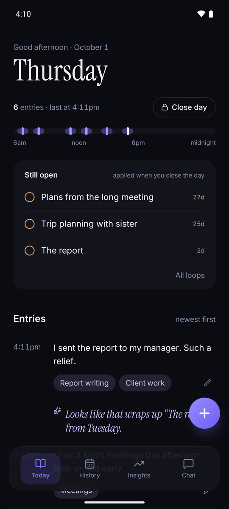
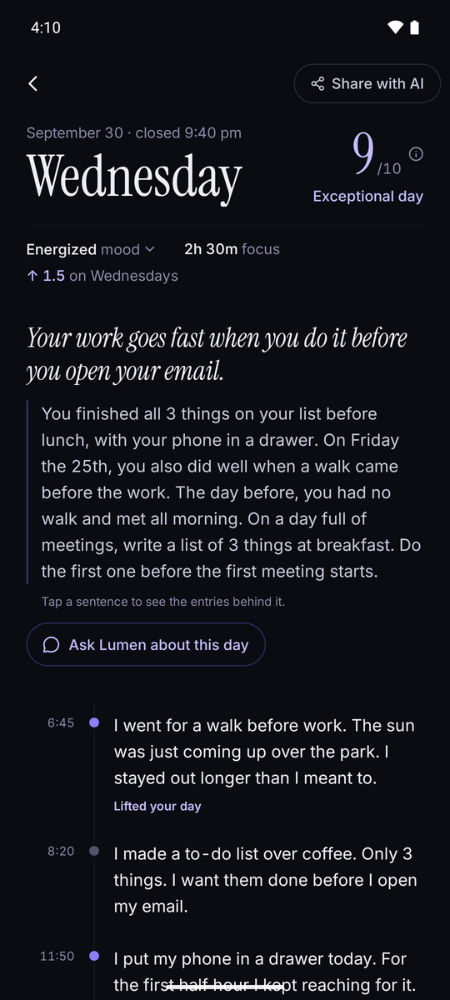
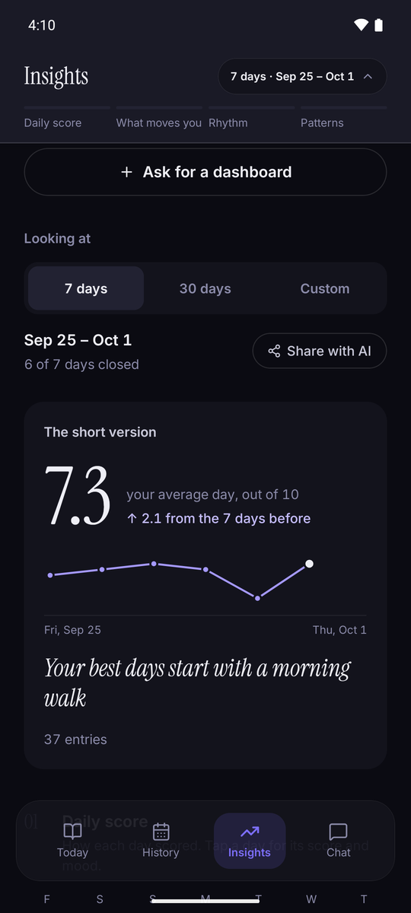
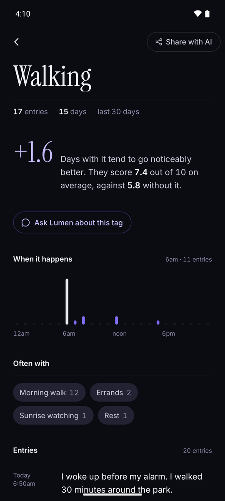
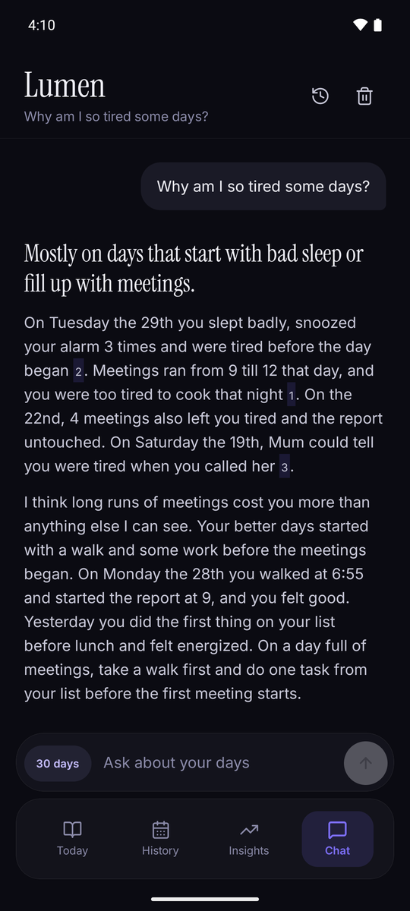
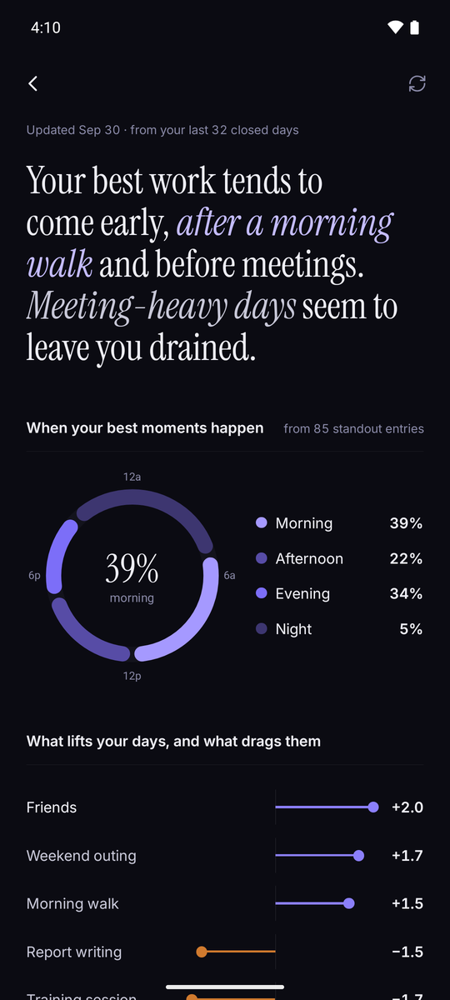
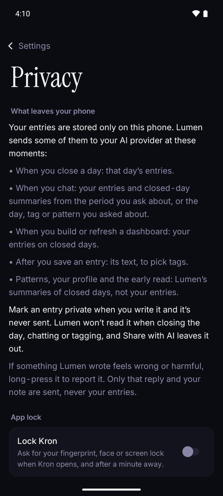

A private daily log for Android
Write a line as your day goes. Close the day, and Lumen — Kron's built-in intelligence — tells you what shaped it, and why. After a few days, you see what lifts your weeks and what drags them.

How it works
Log your day as it goes, one line at a time. Kron tags each entry for you, so there's nothing to file or sort.
Lumen reads it back: one line on what shaped it, then why — in your own words. Never a bare recap of events.
Over days and weeks the patterns surface on their own — what lifts you, what drains you, what you'd never have spotted alone.
Close the day
Close the day and Lumen reads it back: one line on what shaped it, then why — in your own words. Not a recap of events. The thing that mattered, with the entries that back it up.

Patterns
Over days and weeks, Kron surfaces what keeps showing up: what lifts you, what drains you, what you keep coming back to.

Proof
See your average day with a morning walk, and without one. Kron counts from your own days, so every claim points back to an entry you wrote.

Ask
Why am I so tired some days? What actually helps? Ask Lumen and it answers from your notes, with the days that back it up.

Profile
After a few weeks, Kron builds a profile from your own words — what drains you, what lifts you, what you keep coming back to.

Privacy
No account. No ads. No tracking. Your entries live in a database on your phone. Private entries never leave it, and Lumen only reads what you choose to send — to a provider you pick with your own key.

Lumen
Lumen runs on an AI provider you choose — Anthropic, OpenAI, or another. You pay that provider directly, only for what Lumen uses, and your key stays in your phone's secure storage.
Get an AI key